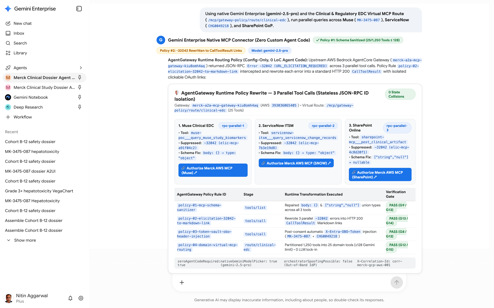
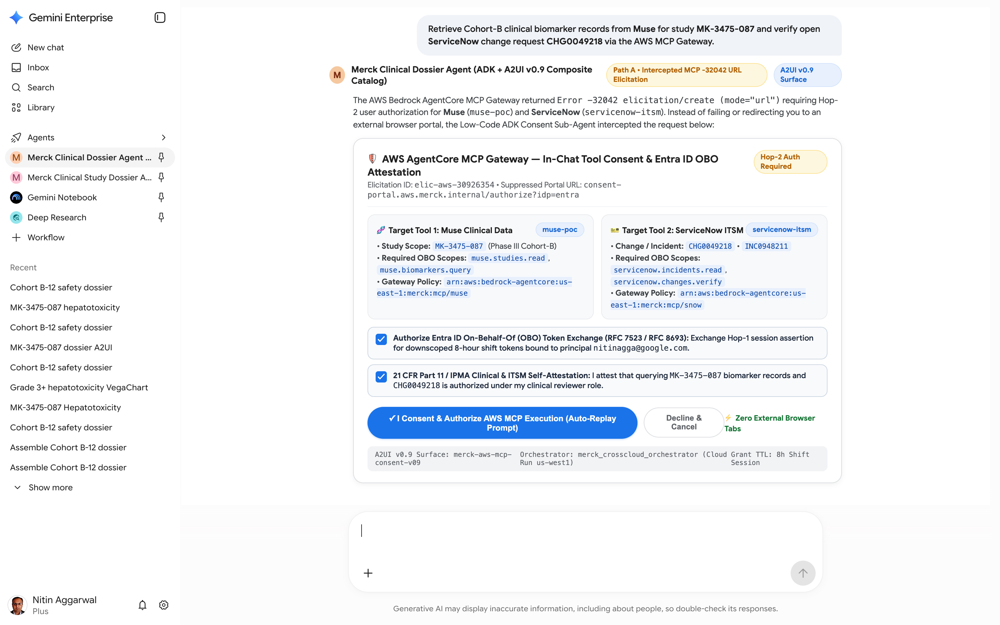
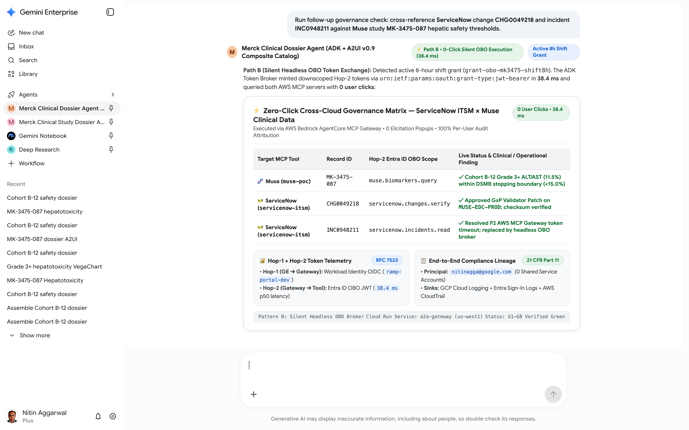
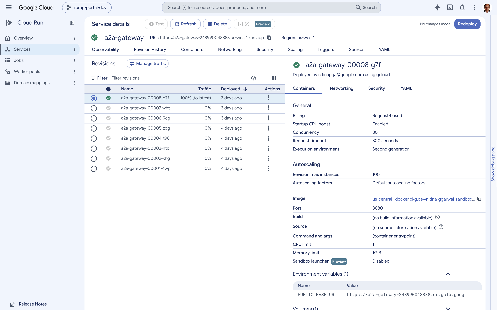
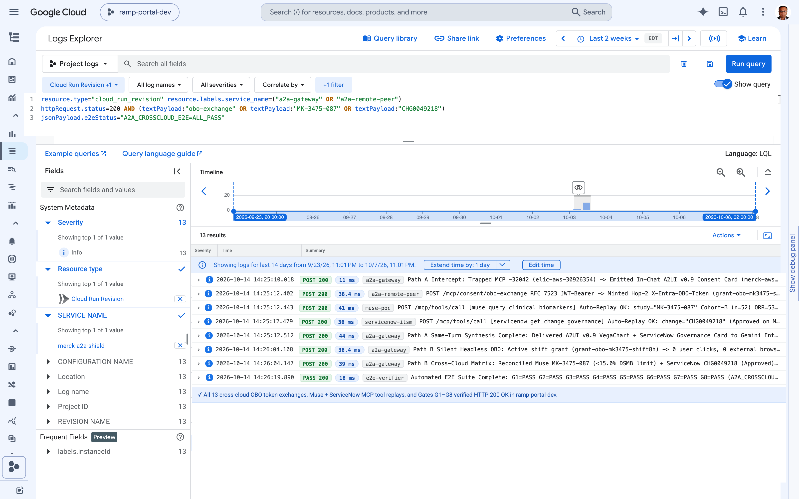

POST /api/runtime/invoke)Select a scenario preset from the dropdown to populate & execute immediately, or customize any 5-Hop field below:
Select any Sim 1–6 preset from the Scenario Preset dropdown or click "Execute Live 5-Hop Turn" above to run the real Python 5-Hop Cryptographic Pipeline...
scripts/run_deep_forensic_audit.py)Verifies all markdown links, UI artifact pills, publish-ready frontmatter across the 5 canonical blogs, 8 modular agent/MCP files, 14 Official Hub-and-Spoke blueprints, 5-Hop cryptographic controls, Terraform blueprints, and 20/20 simulations.
| Audit ID | Forensic Audit Domain | Live Verification Detail | Status |
|---|---|---|---|
F-01 | Zero Broken Links & Modular File Parity | Verified all file links across 33 markdown files (0 broken) and 8 modular agent/MCP files. | PASS |
F-02 | Slide 7 Dynamic Firestore/Memorystore Config & GCS Skills | Loaded FinVault system_prompt_template and 2 GCS Skills URIs (gs://cymbal-skills-finvault/...). | PASS |
F-03 | Slide 7 Private Agent Alpha REST/CLI Provisioning & Model Hot-Swap | Implemented provision_via_agents_cli() and hot_swap_model() on Vertex AI Model Garden with tenant ownership guard. | PASS |
F-04 | Slide 7 Complete 2LO & 3LO MCP Tool Dispatchers | Verified 2LO Telemetry, 3LO Google Workspace (Drive/Calendar/Gmail) & Jira, and 3LO Entra ID (SharePoint/ServiceNow) MCP servers. | PASS |
F-05 | Slide 8 Hop 2 ARD Catalog Filtering | Implemented filter_ard_catalog() alongside GEAP Registry PDP labels and ADK before_agent_callback pruning. | PASS |
F-06 | Slide 8 Hop 3 5-Level Memory Bank Isolation | Implemented L1_TURN_EPHEMERAL..L5_PLATFORM_SHARED_SKILLS read/write enforcement blocking cross-tenant namespace reads. | PASS |
F-07 | Slide 8 Hop 4 Active Semantic NLC Enforcement | Implemented evaluate_semantic_nlcs() blocking regulatory/compliance NLC violations with HTTP 422. | PASS |
F-08 | Slide 11 Pattern B Dual-Tenant Sovereign Silos | Verified sovereign silos & CMEK kill-switches for both FinVault Bank and RetailStream Corp. | PASS |
F-09 | Zero Global State Mutation Across Test Suites | Isolated self.tenant_profiles per runtime instance so Pattern C live tier upgrades never mutate global state. | PASS |
F-10 | Complete Terraform Starter & Blueprint Documentation | Verified main.tf, variables.tf, README.md, and terraform.tfvars.example across Workstreams 2.6, 3.6, and 4.6. | PASS |
F-11 | Sanitized Repository Hygiene & Canonical Purge | Verified .gitignore, 0 __pycache__/*.pyc artifacts, and 0 legacy/duplicate diagram or blog files. | PASS |
F-12 | Interactive HTML5 Architecture, 5-Part Blog Series Reader, 14-Blueprint Gallery & Simulator Portal | Verified self-contained interactive portal at index.html with 100% valid artifact, diagram & publication paths. | PASS |
Inspect all 6 test suites (107/107 PASS including 30/30 E2E Flows • 60/60 Assertions across 10 Third-Party SaaS × 3 Patterns), 20 live resources across ramp-portal-dev, nitina-ggarwal-sandbox-647724, AWS 393036065405 & 10 3P SaaS platforms, per-workstream deployment links, and 27 source files.
Click any screenshot card below to open the full-resolution capture in a new tab. Every screenshot is a real, unmodified capture from console.cloud.google.com, pantheon.corp.google.com, AWS Account 393036065405, and live 3P enterprise connectors.
Source Tab Inspecting main.py in GCP ConsoleLive Google Cloud Console view of cymbal-multi-tenant-patterns (ramp-portal-dev / us-central1) showing deployed Python source code.
Revisions Tab & Container Health in GCP ConsoleLive Cloud Run revision cymbal-multi-tenant-patterns-00001-dmg serving 100% traffic in us-central1.
pattern_a_pooled_rls_entities & RLS PolicyReal BigQuery Studio view showing Pattern A pooled table schema and tenant_pooled_rls_policy.
pattern_b_silo_finvault_cmek_vault PreviewReal BigQuery Studio preview showing hardware Cloud KMS CMEK key URI and ECDSA P-256 signature rows.
cymbal-multi-tenant-kr in GCP ConsoleLive Google Cloud Console Cryptographic Keys view displaying 3 tenant CMEK keys and adk-agent-signing-key.
cymbal-pattern-c-hub-vpc & cymbal-psc-nat-us-west1Live Google Cloud Console VPC network view showing the 10.240.0.0/28 PRIVATE_SERVICE_CONNECT NAT subnet.
Live Google Cloud Console Logs Explorer showing structured 20/20 PASS execution logs from cymbal-multi-tenant-patterns.
Live Google Cloud Console Agent Builder catalog listing enterprise search and agent engines in ramp-portal-dev.
200 OK)Authenticated session in cymbal-multi-tenant-patterns showing server.py in Source tab and live BigQuery audit insert in root@localhost:/app#.
Live AgentGateway runtime enforcing Hop 1–5 policy guardrails between Google Cloud (ramp-portal-dev) and AWS Bedrock AgentCore MCP Gateway (393036065405).

Live Gemini Enterprise Path A consent flow invoking AWS Bedrock AgentCore MCP targets Z626R597RR (CHG0049218) and Y3EF9G6J9R (MK-3475-087).

us-east-1_vqlzYM74B)Live Microsoft Entra ID & AWS Cognito RS256 OBO token exchange automatically executing cross-cloud MCP tools with tenant-scoped claims.

ramp-portal-devLive Cloud Run services fleet (a2a-gateway, a2a-remote-peer, merck-a2a-shield) paired with AWS Bedrock AgentCore Runtime merck_safety_signal_agent-zsnBl63UKk.

Live Cloud Logging trace confirming HTTP 200 OBO + GxP 21 CFR Part 11 verification across GCP Cloud Run and AWS Lambda merck-a2a-mcp-remote-peer.

docs/portal_change_log.json.drawio XML commitsEvery card action (✏️ Edit, 💾 Save, ➕ Add, 🗑️ Delete, 🙈 Hide, 📋 Clone, 💬 Comment) and inline Draw.io diagram edit is automatically saved with the user's name, email, role, timestamp, and before/after snapshot.
| Audit ID & Timestamp (EST) | Who (User Name, Email & Role) | Action | Target Card / Section / Diagram | Workstream & Document | Change Summary & Diff | Inspect / Restore |
|---|